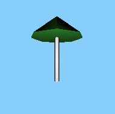

Un client souhaiterait créer un environnement 3D ayant pour thème « Vacances au bord de la plage » et aurait besoin de petits parasols en 3D. En vous aidant de la documentation officielle de three.js, créez une scène et ajoutez-y un parasol composé d'un cylindre blanc, pour faire le mât, et d'un cône vert, pour faire la toile. La lumière doit interagir avec chaque composant du parasol, et le mât doit refléter légèrement la lumière. Voici un exemple de parasol possible :
La taille et les couleurs exactes sont à votre convenance : faites vos propres parasols, tant qu'ils respectent les contraintes de base. Il faut également que le parasol soit simple à manipuler. En déplaçant le mât, la toile doit également se déplacer.
Pour que le mat reflète légèrement la lumière, il faut donner à son matériau une valeur de roughness inférieure à 1 : l'exemple utilise 0.3. Pour voir la différence, il faut zoomer sur le mât, avec une source de lumière assez proche.
Après avoir créé la scène, la caméra et le renderer, il faut créer un objet de type CylinderGeometry et un autre de type ConeGeometry. Le mât doit être le parent de la toile. Pour positionner le cône au-dessus du cylindre, il faut utiliser la méthode set de la propriété position.
Les deux objets doivent utiliser un MeshStandardMaterial, et celui du mât doit avoir une roughness strictement inférieure à 1. Pour que les objets ne soient pas entièrement noirs, n'oubliez pas d'ajouter une source de lumière, comme une PointLight.
Le script complet permettant de générer l'exemple est :
See the Pen Untitled by OpenSpirit (@OpenSpirit) on CodePen.